Configuring the Likelihood Detector
Once there is a Likelihood detector module added to the PAMGuard system, the module can be configured by selecting the Detection-> menu item and choosing the menu option with the name that was supplied when the module was added.
If this is the first time the module has been configured, then a dialog resembling the following will appear.
| 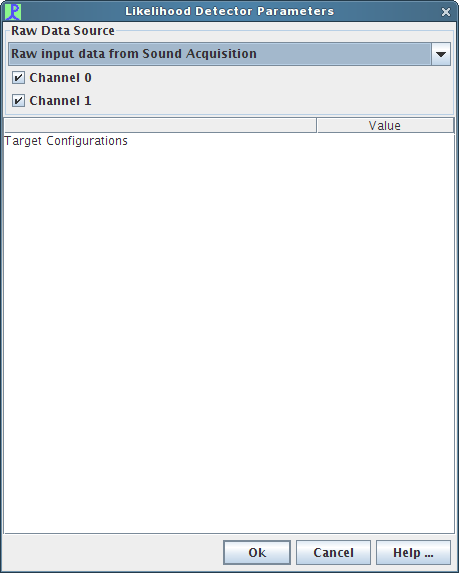 |
|---|
Selecting an Audio Data Source
Located at the top of the Likelihood Detector configuration dialog is the standard PAMGuard Raw Data Source management panel. Using the drop-down box you can select a single audio source for the module. A Likelihood Detection module can only have one audio source. If you would like to process multiple target configurations on multiple audio sources simultaneously, you will need to add another Likelihood Detection module. See the section on adding a new Likelihood Detection module for more information.
You can also select which channels of audio data to process. By default, all channels will be selected, but by using the checkboxes you can filter out specific channeles.
| 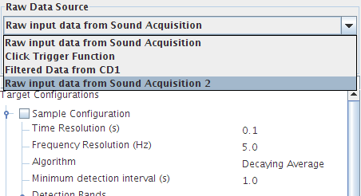 |
|---|
Adding a Target Configuration
To add a new target configuration to the Likelihood Detector module, right-click on the “Target Configurations” row in the list box and select "Add Configuration".
| 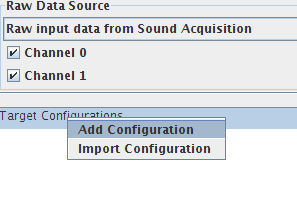 |
|---|
A dialog box will open and prompt you to enter a unique name for the target configuration. The dialog will not allow you to enter in a name that is already taken. Note that target configuration names are case sensitive.
General Parameters
Once a target configuration is added, it will be displayed in the configuration area, showing the default values for the general parameters. These general parameters are discussed in brief below.
| 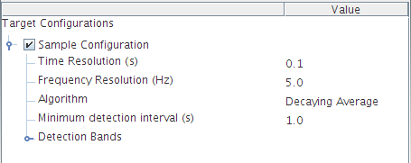 |
|---|
Time and Frequency Resolutions
The time resolution and frequency resolution parameters provide configurable values that are used in conjunction with the audio source properties in order to derive the signal processing settings for the Fast Fourier Transform (FFT) process found at the start of the processing stream. The FFT process operates on the raw input data, converting it to the frequency domain. A Hann window (raised cosine) is used in all cases. Note that changes in sample rate do not require a change to the various settings.For very short signals (< 50ms) the time_res should be on the order of the signal duration to twice that. Setting it to be much larger than the signal duration will reduce the detectors ability to detect low SNR (weak) signals.
For longer signals, a time_res less than the signal is appropriate, and helps to get better detection timing. The default of 0.1 seconds is often appropriate. The data is still averaged over the length of a signal (using the signal window parameter) in the Normalizer block. This is a sliding window, which is more appropriate for several reasons.
The frequency resolution is normally set to
freq_res = 1 / (2 * time_res)which results in 50% overlap.Algorithm
This parameter specifies the normalization algorithm that is to be used for the target configuration. There are two possible normalizers: Decaying Average and Block Average. The Decaying Average algorithm uses feedback to generate estimates similar to the Click Detector. The Block Average algorithm averages a specified block of data history.In general, the block averager is a better choice because it doesn’t have a long-term memory. For signal processors the block average is like an FIR filter, whereas the decaying averager is like an IIR filter.
The normalizer produces a likelihood ratio L = S / N.
Here are some guidelines for normalization:
For the block averager, a good choice for the signal window is the duration of the click or call being detected, while the noise window should be at least 3 times longer. If the actual signal’s duration is variable, the signal window can be biased to the longer cases. If the difference between short and long duration signals is significant (more than 2x), another option is to create multiple bands each tuned to the different durations. The noise window shouldn’t be so long as to cause neighbouring signals to be in the noise window during detection. For example, if the real signal’s duration is 1.0 seconds and the inter-call interval (time between start of one call and the start of the next call) is 3.0 seconds a noise window of 5 seconds would be appropriate, but a noise window of 10.0 seconds would be too long. In this case the longest suggested noise window would be 5 seconds to avoid corrupting the noise estimate with other signals of interest.
For the decaying averager, which uses feedback to generate estimates similar to the click detector, a different strategy for selecting signal and noise windows is appropriate. The signal window can still be on the order of the duration of the vocalization of interest, though it will effectively smear out the signal if many more times than the time resolution. As a general rule of thumb, it should not be more than 4 times the time resolution. The noise window needs to be longer, especially if loud calls are occurring frequently, or the noise estimate will develop a bias due to the feedback.
Minimum detection interval:
This parameter indicates the minimum interval between individual detections. If two or more detections occur within this configured amount of time, then they will be considedered all part of the same event, and will be considered one detection.
Parameter Tooltips
Most of the target configuration parameters have legal bounds that are determined either by the audio data source’s parameters or by other target configuration parameter values. In order to ease configuration of the Likelihood Detector module, tool tips are provided in the configuration dialog. Leaving the mouse pointer over a parameter’s value in the Value column of the dialog’s target configuration window will display a tool tip indicating the valid lower and upper bounds for a parameter. The bounds displayed by the tool tip will be enforced by the editing widget for the parameter.
| 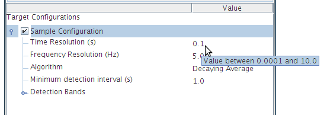 |
|---|
Note: Some parameters are co-dependent, for example the signal/guard band’s noise window and the signal window. To be able to enter the value you want, it may be necessary to alter a dependent parameter. The tool tips will help you with this by explaining if any parameter boundries are dependent on another parameter.
Editing a Parameter
All of the configurable parameters for a target configuration are editable in-place within the configuration dialog. To edit a parameter, simply double-click with the left mouse button on a value in the Value column and an editing widget will appear.
The editing widget for a parameter will enforce the valid values on the numbers that are entered.
| 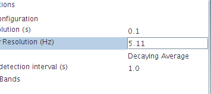 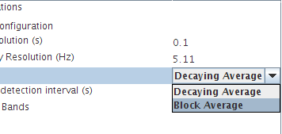 |
|---|
Note: Some parameters are co-dependent, for example the signal/guard band’s noise window and the signal window. To be able to enter the value you want, it may be necessary to alter a dependent parameter. The tool tips will help you with this by explaining if any parameter boundries are dependent on another parameter.
Parameter Validation
The Likelihood Detector’s configuration dialog provides validation of user input. When a tool tip displays a range of valid values (see Parameter Tooltips, above) the configuration dialog will give live feedback to the operator by disallowing invalid characters and values to be entered. This feature works in conjunction with the error reporting described below.
The Java Validator used to implement the validation can be very literal with what it allows you to type. Here are some helpful hints to keep in mind when entering floating-point values:
You can hit the ESCAPE key at any time to cancel editing and return the parameter to its original value.
If you want to type a fractional number beginning with zero (e.g., 0.5), make sure you type the zero first. The validator may get confused if you type “.5”.
Sometimes deleting digits from the middle of a number creates an invalid value and the validator will attempt to correct it for you. You can always select the whole number with the mouse or the keyboard and start over.
Note: Some parameters are co-dependent, for example the signal/guard band’s noise window and the signal window. To be able to enter the value you want, it may be necessary to alter a dependent parameter. The tool tips will help you with this by explaining if any parameter boundries are dependent on another parameter.
Error/Warning reporting
When a new target configuration is added, or when all of the signal bands for a target configuration have been removed, the target configuration isn’t valid. Since a configuration isn’t valid without at least one signal band, the target configuration selection box will display a red border prompting you to add a signal band.
| 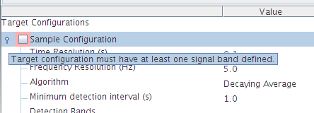 |
|---|
While editing a target configuration parameter, if the text entered isn’t valid or is not within the allowed legal boundries for the parameter, then the configuration dialog will display a red border around the parameter’s editor and keep the editing focus there until a valid value is entered.
| 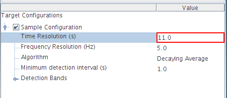 |
|---|
Since many of the target configuration’s parameters have legal boundries based on audio data source parameters or on other configuration parameters, it is possible that a change to a parameter will invalidate some other parameter in a target configuration. In addition, a change to an audio data source may invalidate values in one or more whole target configurations.
If this condition occurs, then the existance of invalid parameter(s) will be indicated in two ways:
The background colour for the entire value box for the parameter will change to red until the parameter is adjusted.
The target configuration activation checkbox will change its state to inactive and will display a red border around it until the parameter is adjusted.
| 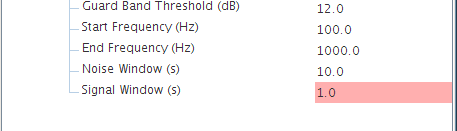 |
|---|
In certain cases, a value can be within an accepted range, but it will produce an undesirable result. For example, the Noise Window parameter of the signal and guard bands will produce a warning if it is set to a value that is greater-than or equal to the time resolution times 500. In this case, the warning is provided to make the user aware of the increased processing load that would be required.
When a warning condition is detected, the configuration dialog will change the background of that parameter to yellow:
| 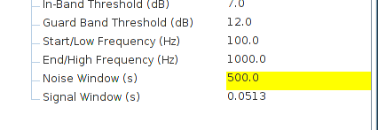 |
|---|
Adding a Signal Band
To add a new signal band to a target configuration, right click on the Detection Bands tree item for the name of the target configuration you wish to add a new band to, and a pop-up dialog will appear. Select the Add Signal Band menu option. You will be prompted to add a new unique signal band identifier for the target configuration. The band name dialog will ensure that the identifier you choose is unique.
| 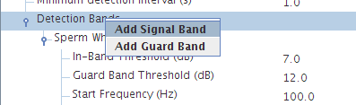 |
|---|
Signal Band Parameters
When a new signal band is added, the Likelihood Detection module will add a series of default parameter values for the band.The default thresholds should be acceptable for most environments but can be lowered if the detector has too many missed detections, or raised if the detector is generating too many false detections. These are shown and described below:
| 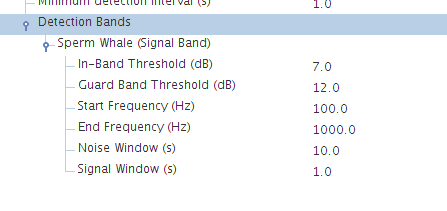 |
|---|
In-Band Threshold
The threshold in Decibels for the in-band Likelihood Ratio test (ie signal versus noise estimate threshold). The trigger level for each detection is recorded in the database, which may support threshold selection.Guard Band Threshold
The threshold in Decibels of the guard band ratio test. If the average of all guard bands signal estimate versus the in-band signal estimate band is less than the threshold, there is a target present. Otherwise, the detection is prevented by the guard band.Start/Min Frequency and End/Max Frequency
It is normal to define the band low and high frequency to contain the entire expected signal, or at least that portion of the signal that contains the most energy.Noise Window
The noise window parameter represents the amount of time around the signal that is used for background noise estimation. How the noise window parameter should be configured is dependent on the type of normalization that is being used. See the Guidelines for Normalization section above for more information.Signal Window
The signal window is the representation of the duration of the click or call that is being searched for. How the signal window should be configured is dependent on the type of normalization that is being used. See the Guidelines for Normalization section above for more information.
Adding a Guard Band
To add a new signal band to a target configuration, right click on the Detection Bands tree item for the name of the target configuration you wish to add a new band to, and a pop-up dialog will appear. Select the Add Guard Band menu option. You will be prompted to add a new unique signal band identifier for the target configuration. The band name dialog will ensure that the identifier you choose is unique.
| 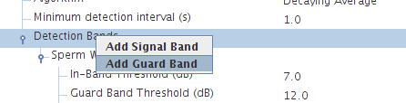 |
|---|
Guard Band Parameters
When a new guard band is added, the Likelihood Detection module will add a series of default parameter values for the band. The default thresholds should be acceptable for most environments but can be lowered if the detector has too many missed detections, or raised if the detector is generating too many false detections. These are shown and described below:
| 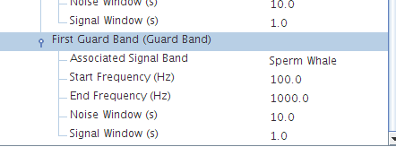 |
|---|
Associated Signal Band
The signal band that this guard band is applied to.Start/Min Frequency and End/Max Frequency
It is normal to define the band low and high frequency to contain the entire expected signal, or at least that portion of the signal that contains the most energy.Noise Window
The noise window parameter represents the amount of time around the signal that is used for background noise estimation. How the noise window parameter should be configured is dependent on the type of normalization that is being used. See the Guidelines for Normalization section above for more information.Signal Window
The signal window is the representation of the duration of the click or call that is being searched for. How the signal window should be configured is dependent on the type of normalization that is being used. See the Guidelines for Normalization section above for more information.
Enabling and Disabling a Target Configuration
A single Likelihood Detection module can have many different target configurations configured, but not all of them need to be active during a detection run.
Enabling and disabling a target configuration is as easy as selecting the target configuration checkbox located next to the name of the target configuration in the configuration tree.
| 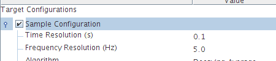 |
|---|
| 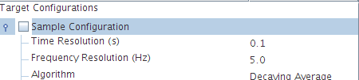 |
|---|
| 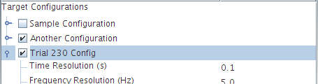 |
Removing a Signal or Guard Band
Removing a signal or guard band from a target configuration is easy. Simply right-click on the name of the band you wish to remove, and a pop-up menu will display an option to remove the band.
| 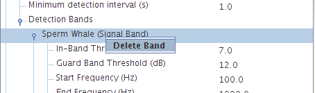 |
|---|
| 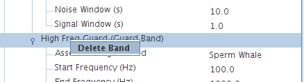 |
|---|
| 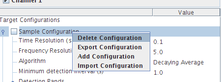 |